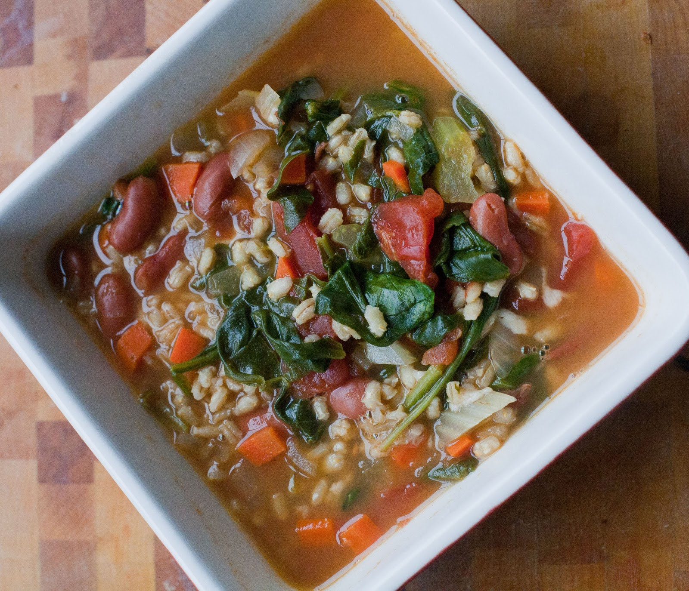

Hardy Barley

Description
This is a recipe from a cookbook by Dr. Dean Ornish
Ingredients
- 5 cups Vegetable Broth
- 1 can ground tomatoes
- 1 cup diced onion
- 1 cup celery
- 1 cup potato
- 3/4 cup lentils
- 1/2 cup diced carrot
- 1/2 cup diced green beans
- 1/2 cup pearl barley
- 1 cup zucchini
- 1/2 cup macaroni
Directions
- In a large pot, combine 5 cups vegetable broth, tomatoes, onion, celery, potato, lentils, carrots, green beans and barley.
- Bring to a simmer over moderate heat.
- Cover, adjust heat to maintain a slow simmer, and cook 30 minutes.
- Add zucchini and macaroni.
- Cook, uncovered, until macaroni is done, about 15 minutes.
- Add broth if soup is too thick. Season with salt and pepper.